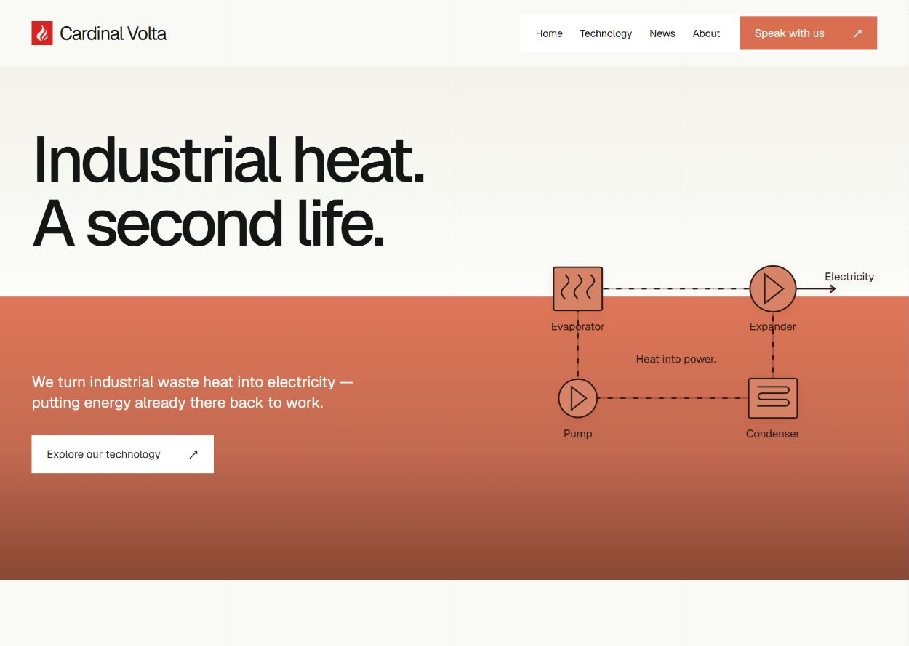
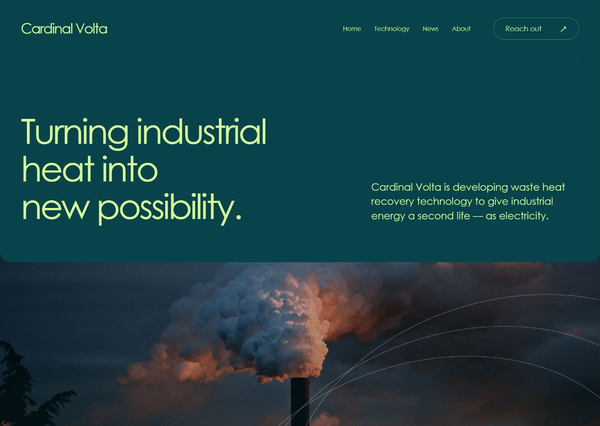
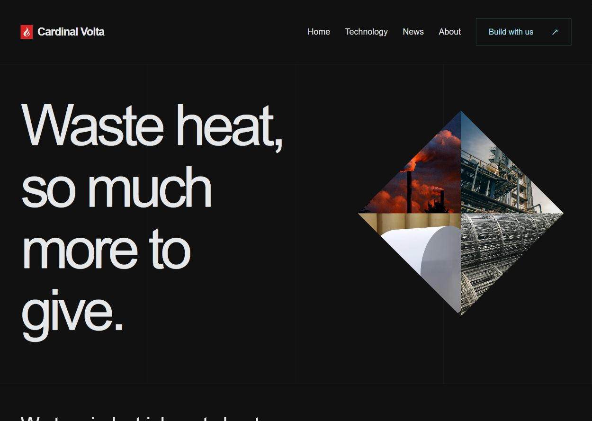
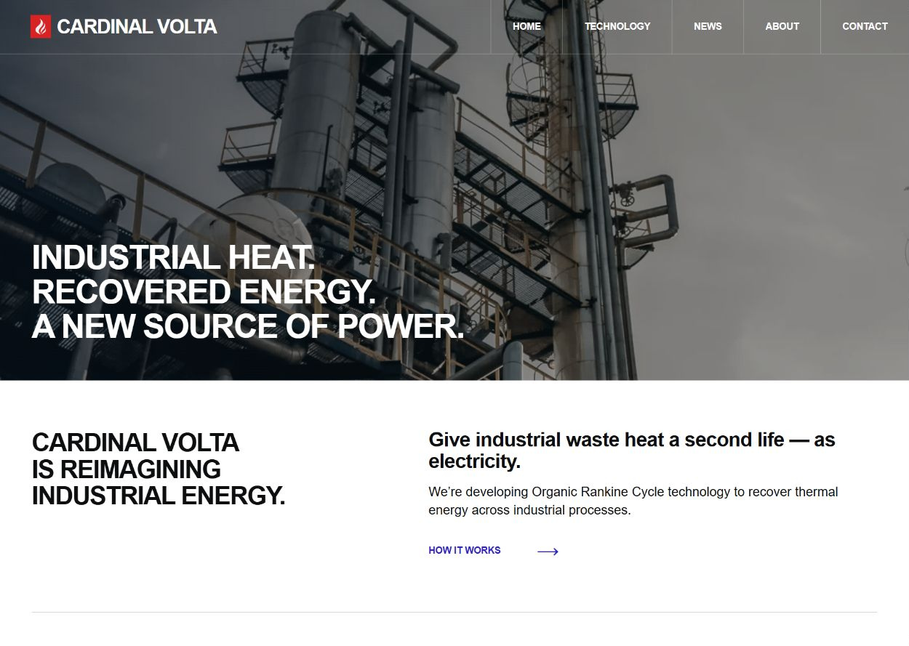

按四个参考网站的实际导航、字体尺度、配色和章节构图制作。所有文字均为真实网页排版。这轮用于选择方向，尚未替换官网。

浅底标题、独立导航块、跨越色块的技术主视觉，随后用居中的大段文字形成节奏。

深青与浅黄绿贯穿首屏，标题和介绍分列；影像放在下一屏，内容区采用大留白与圆角。

主标题占据半屏以上，四张真实素材组成裁切图形，技术章节切换为冷灰浅底。

满幅工业影像、细框导航、粗体大写标题与紧凑内容网格。编号只用于有顺序的三步说明。